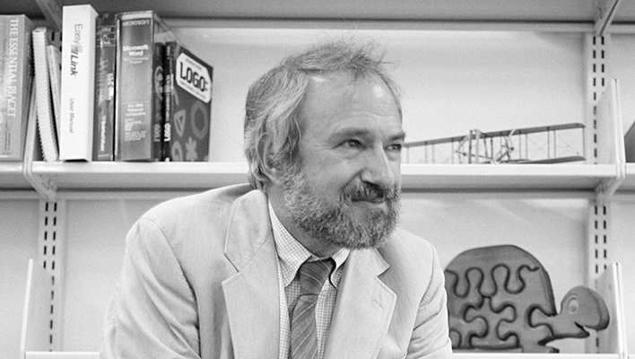
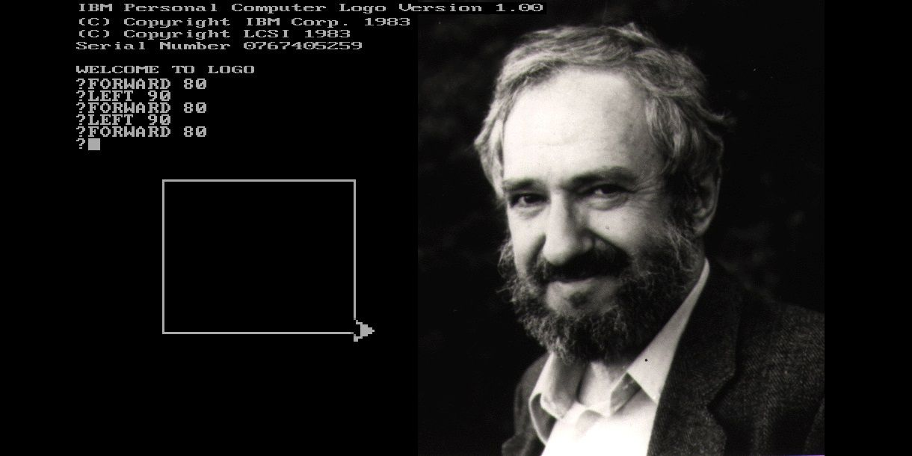
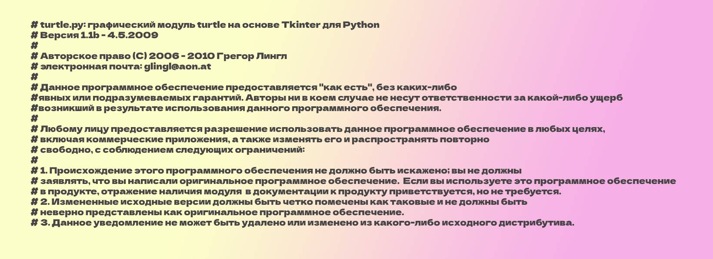
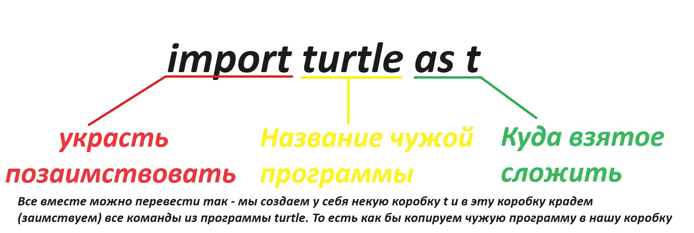
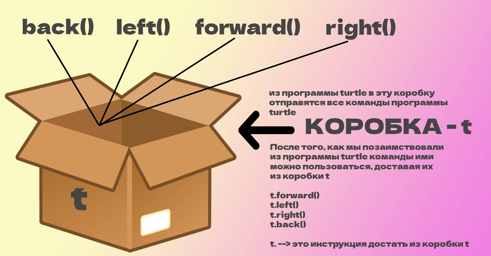
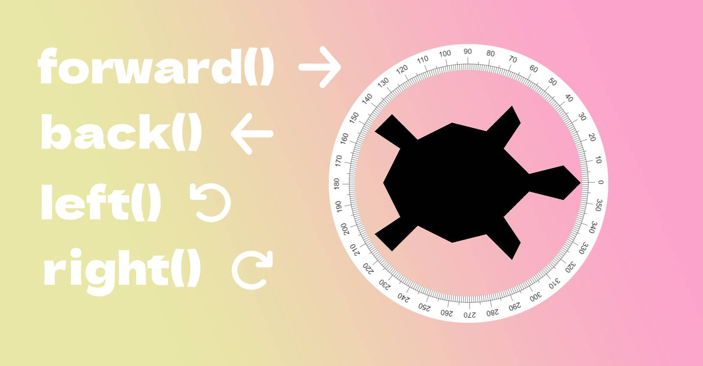
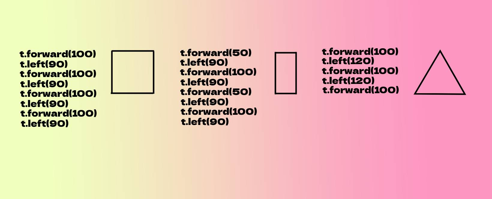

Добро пожаловать в 6 урок.
Знакомьтесь это наш с Вами новый друг в мире программирования - Сеймур Паперт! Эксцентричный и веселый дядька. Он математик, программист, психолог и педагог. Один из основоположников теории искусственного интеллекта, создатель языка Logo (1968).

Сеймур Паперт, математик и пионер в области образования, изобрел черепашку в 1960-х годах. Черепашка - это роботизированная игрушка с механическими ножками, которая может двигаться по командам, заданным через компьютер. Он создал черепашку, чтобы помочь детям изучать математику и программирование, используя простой и интерактивный подход. Это стало важным шагом в развитии образования, и черепашка до сих пор используется в школах и университетах по всему миру. Вот так выглядит его черепашка.
Если говорить своими словами, то Сеймур Паперт очень значимый человек в области информатики и образования. Он постоянно думал о том, как научить новое поколение школьников и студентов программированию. Программирование того времени, выглядело для детей и студентов достаточно сложным и неинтересным, а что-бы управлять роботом черепашкой из видео - нужно было хотя бы чуть-чуть знать робототехнику. Нужен был какой-то новый простой и интересный подход. Который, полюбят и дети и студенты. После долгих лет поисков решения и стараний Сеймур изобрел свой собственный язык logo. Используя этот язык можно было управлять виртуальной черепашкой, передвигая ее по экрану монитора, что очень нравилось детям того времени.

Вдохновившись примером Сеймура Паперта, сегодня появилось очень много программ и интерактивных героев, которыми можно управлять при помощи программирования. Среди самых знаменитых Minecraft Edu, Scratch, Kodu Game Lab. Иными словами Сеймур - вдохновил других педагогов и разработчиков идти по пути наглядного и в каком-то смысле забавного игрового программирования.
Спустя годы, вдохновился примером Сеймура Паперта - педагог Грегор Лингл (учитель информатики, математики и физики). Грегор Лингл помог создать для языка Python - свою версию черепашки (то есть свою версию идеи Сеймура Паперта, для языка Python). И сегодня, мы воспользуемся этой черепашкой.
НО! ПРЕЖДЕ, ЧЕМ МЫ ПОЙДЕМ ДАЛЬШЕ! Нам нужно - поработать с переводчиком. Для управления черепашкой - нам не подойдет python-online, он не поддерживает рисование черепашкой. Поэтому, обязательно сделайте все шаги показанные на видео - ниже. До сих пор мы с Вами программировали на сайте python-online. Но настало время, когда нам нужно будет установить себе настоящую среду разработки.
Мы же с Вами уже научились пользоваться командами print() и input(). Дело в том, что когда мы скачиваем себе переводчик на компьютер, мы как бы скачиваем себе наборы команд, которыми мы сможем пользоваться. Пока мы программировали через сайт, наши команды отправлялись на удаленный компьютер, где уже установлен переводчик. Поэтому у нас все и получалось. Теперь же мы сами себе на компьютер установили переводчик(среду разработки) и пользоваться сайтом - нам больше не нужно.
Среди наборов огромного множества программ, которые мы установили себе на компьютер в комплекте с переводчиком, есть набор команд turtle (программа черепашки для питона) - разработанный с участием Грегора Лингла, вы даже можете прочитать его аннотацию в самом начале этого набора команд.

Подведем небольшой итог:
Благодаря Сеймуру Паперту, интерактивное (игровое) программирование начало набирать популярность, появилось очень много программ, которые учат детей основам программирования через игры. Для языка питон, свою версию черепашки Сеймура Паперта написал преподаватель Грегор Лингл. Его набор команд (программа) изначально присутствует в переводчике (среде разработки), который мы установили себе на компьютер - и называется "turtle". Именно этой программой мы и собираемся воспользоваться.
Кусочек инструкций - ниже. Показанный на картинке, это и есть использование программы Грегора Лингла. Мы как бы берем из его программы (он нам сам разрешил) - нужные нам команды.

С помощью команды import мы забираем в свою программу в коробочку t все команды из программы turtle. То есть из той самой программы Грегора Лингла, о которой мы с Вами говорили выше.
Идея проста до безумия. Представьте что на белом ватмане, ползает черепашка. Вы привязываете к черепашке кисточку или карандаш и можете просить черепашку с помощью команд двигаться в каком-то направлении. При движении черепашка будет оставлять за собой след от кисточки.

Команд в программе turtle огромное множество, но мы разберем с Вами (пока-что) самые популярные и самые простые .
Итак из нашей коробки t ----> берем команду forward().

Комбинировать эти команды можно как угодно, каждый раз получая разные фигуры. Главное - располагайте их одна под другой, и представляйте путь черепашки. Из этих команд можно создавать - простые геометрические узоры. Вот примеры.

У всех приведенных примеров есть особенность, как бы мы не меняли местами команды - они все равно выстраиваются в линию, образуя Линейный алгоритм. В языке программирования Python - это последовательность команд, которые выполняются одна за другой, как шаги. Каждая команда выполняется только один раз, без повторений или пропусков.
Можем сократить! Алгоритм это последовательность инструкций. А последовательность инструкций без пропусков и повторов (циклов) - линейная.
Обратите свое внимание! В Питоне уровни отступа (расстояние от левой границы рабочей области) используются для группировки кода. При помощи отступов, наш с Вами переводчик, понимает какая часть кода к чему относится. Как раз таки линейный алгоритм, всегда будет идти вдоль левой границы рабочей области без отступов.
Но если встречается отступ в 4 пробела - он уже указывает на принадлежность команд с отступом, последнему элементу без отступа. Каждый уровень отступа (обычно 4 пробела или 1 клавиша Tab) показывает, что код находится внутри определенного блока, такого как функция, цикл или условие.
Линейный алгоритм - это как строить башню из кубиков: когда мы ставим новый кубик, мы должны сдвинуть его немного вправо или влево, чтобы он был выровнен с предыдущим кубиком.